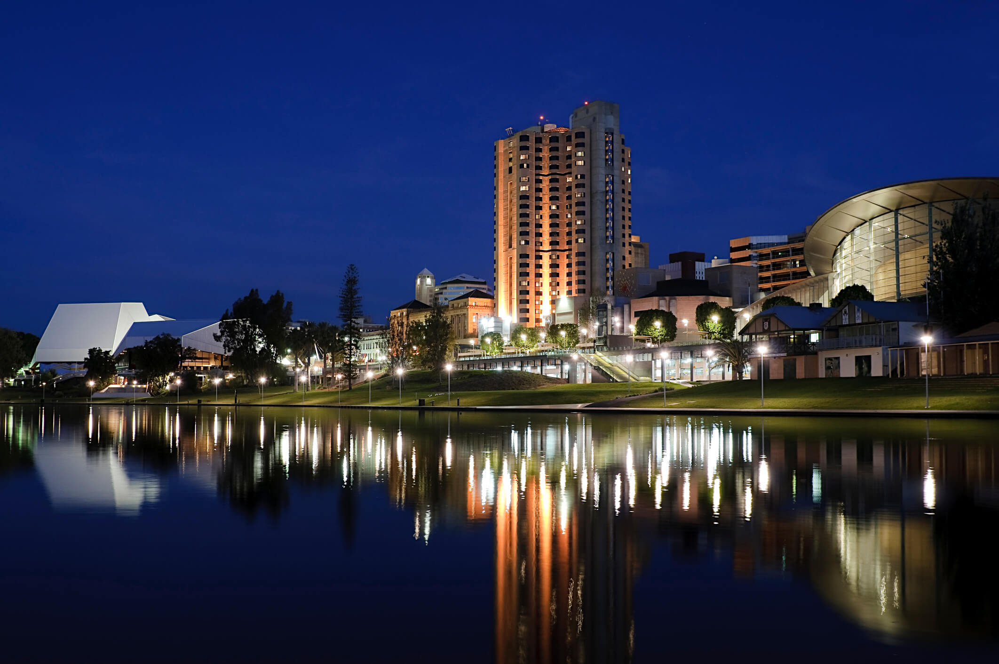

AS MELHORES CIDADES PARA SE MORAR

Zurique
Sendo a maior cidade da Suíça, a cidade, que possui menos de 500 mil habitantes, é um dos maiores centros financeiros do mundo.
Sendo assim, muitos consideram Zurique o melhor lugar do mundo para morar, e não é à toa, a cidade é moderna, segura e possui ótima qualidade de vida e de ensino.
Osaka
Sendo um importante polo financeiro para o Japão desde o século IV, Osaka é a terceira maior metrópole do Japão, contando com cerca de 2,5 milhões de habitantes somente em sua região urbana.
Genebra
Genebra é um centro diplomático. Muitas das sedes de organizações internacionais como a Organização Mundial da Saúde (OMS) ficam lá. Ela também é uma referência cultural da Suíça.
Auckland
Considerado o melhor lugar do mundo para viver, Auckland teve essa posição devido a sua abordagem em relação à pandemia do COVID-19.
Dessa forma, Auckland é considerada a principal porta de entrada para os brasileiros. Ela é a maior cidade da Nova Zelândia com uma população de mais de um milhão de habitantes. E também é considerada o centro comercial do país.
Adelaide

De modo geral, cidades da Austrália costumam aparecer na lista dos melhores lugares do mundo para viver. Por isso, Adelaide não fica de fora! Ela é a quinta maior metrópole do país, com cerca de 1,4 milhão de habitantes.
Além disso, um ponto muito marcante para quem busca conhecimento, é a educação. Adelaide é considerada a 26ª melhor cidade universitária do planeta.